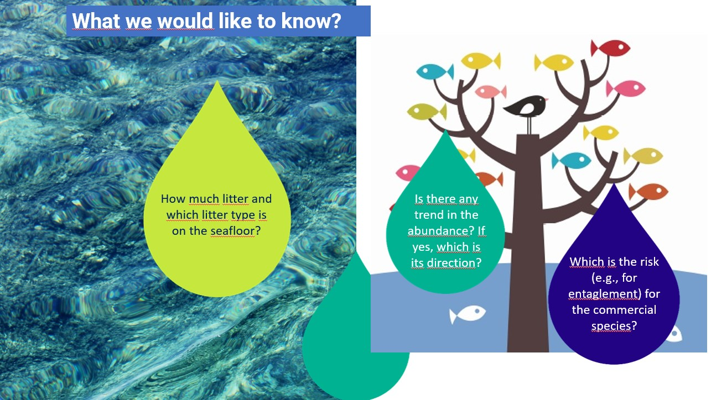
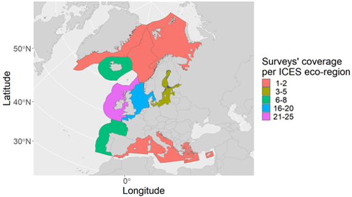

Litter modelling & risk analysis
Tools to model marine macro-litter trends of abundance and distributions from trawl survey data and to perform a risk analysis with impact maps.
M. T. Spedicato, W. Zupa
Overview
This analysis presents tools and results for analysing the temporal trends of mass and number of items fishing-related (FR) litter on the seafloor, spatial distribution with hot spots and pressure induced on key species groups, by FR litter posing risk of entanglement and ingestion.

The analyses are based on data collected during scientific surveys at sea, using statistical models and biological indicators.

GitHub repository layout
00_data_preparation.r – prepares raw data in MEDITS-like format for the litter distribution modelling and for the risk analysis.
The R script:- reads TA (halus) and TL (litter) tables, filters years, converts coordinates to decimal degrees with BioIndex::MEDITS.to.dd(); computes mean haul coordinates, swept area, and mean depth; builds unique haul ID and a continuous time variable ctime (year + day-of-year/365).
- derives post-classification fields on TL (e.g., SUP, FR, ENT and ING catecories), ready for later aggregation. The output path is set to
input/under the root directory, further used as source folder of data for the analysis.
01_Litter_analysis_(GAM_analysis).Rmd – litter spatial distribution modelling (R Markdown file reported in the GitHub repository).
The Rmd file:- defines user parameters (years
ys,AREA, littercategory, response index, bootstrap settings, reference month), paths (data_dir,resdir), and grid file. - loads the observation table, constructs
ctime, loads and expands the prediction grid across years/month, and attaches constant swept area to allow effort-scaled predictions. - fits three candidate GAM models (see Modelling Section), using Tweedie families for continuous indices and binomial-logit for presence/absence, with REML and gamma = 1.4. Saves model objects, summaries, spline plots, grid predictions and bootstrap time-series (means, 95% CI, CV).
- defines user parameters (years
02_Risk_analysis.Rmd – risk analysis and fleet impact (R Markdown file reported in the GitHub repository).
The Rmd file:- loads the litter prediction file produced by the modelling step for the chosen category/response and restricts to selected years/area; merges with the grid and aggregates to per-cell means.
- computes species indices (files listed in species_files) and a multi-species index SP (sum of rescaled species, standardised to 0–1).
- derives Hazard classes from litter quantiles (default thresholds at 33rd/66th percentiles), plots a hazard map.
- converts
SPto percentiles, combines with Hazard to assign exposure risk (Low/Medium/High), and plots the map. - maps fleet-specific Impact by translating Exposure via a gear-impact table (e.g., Low/Medium/High fleets) and plotting per-fleet impact categories.
Inputs
- TA / TL raw tables (MEDITS-like format), used in data preparation.
- Prediction grid CSV (e.g.,
grid_0.05_(0-800m)_GSA_csquare.csv). - Species rasters/tables for abundance (e.g.,
HKE_GSA18_(abundance)_0.05.csv,MUT_...), specified viaspecies_files/species_names.
Dependencies
- Data prep:
BioIndex,lubridate,dplyr. - Modelling:
mgcv,mgcViz,MASS,dplyr,ggplot2,sf,rnaturalearth, plus base plotting; Tweedie family used for continuous responses. - Risk mapping:
ggplot2,raster,dplyr,tidyr,maps.
Install in R (example):
install.packages(c(
"BioIndex","lubridate","dplyr","mgcv","mgcViz","MASS",
"ggplot2","sf","rnaturalearth","rnaturalearthdata","raster","tidyr","maps"
))